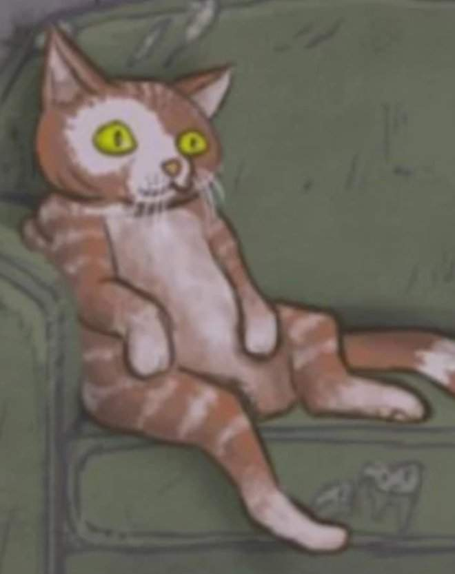

<!DOCTYPE html>
<html>
    <head>
        <meta charset="utf-8"/>
        <title>Personagens secundários</title>
        <link rel="icon" href="../../imgns/Sal/icon640.png">
        <link rel="stylesheet" href="outrosSytile.css">
        <link href="https://fonts.googleapis.com/css2?family=Anton&family=Gloria+Hallelujah&family=Indie+Flower&display=swap" rel="stylesheet">
    </head>
    
    <body>
        <aside>
        <h1>Travis Phelps</h1>
        <p>Ele atormentava Sally Face e seus amigos no tempo de escola. Filho de Kenneth Phelps. 
            </p>

            

            <h1>Lisa</h1>
            <p>Mãe de Larry, zeladora do predio e casada com Henry Fisher.</p>
            

            <h1>Diane Fisher</h1>
            <p> Mãe falecida de Sal.</p>
            
            
            <h1>Kenneth Phelps
            </h1>
            <p>Kenneth Phelps é um dos dois principais antagonistas de Sally Face. Ele é o pai de Travis
                 Phelps e o pregador dono do Ministério Phelps, uma igreja local em Nockfell que na verdade
                  é onde ocorrem os cultos
                 dos Devoradores de Deus.</p>
                 

                 <h1>Henry Fisher</h1>

                 <p>Pai de Sally Face e casado com Lisa</p>
                 

                <h1>O Demônio ds olhos vermelhos</h1>
                <p>O Demônio de Olhos Vermelhos é uma entidade demoníaca malévola de origem extraterrestre.
                     Agindo em conjunto com os Devoradores de Deus, parece ter um único objetivo:
                      devorar e destruir toda a vida.</p>
                      

                      <h1>Terrence Addison</h1>
                      <p>Mais conhecido como Sr.Addison, era o proprietário dos apartamentos Addison. 
                          Ele vende chá para seus inquilinos por 25 centavos e 50 centavos para não inquilinos, está lentamente
                        ficando menos humano a cada dia.</p>
                        

                        <h1>Gizmo</h1>
                        <p>
                            É o gato de estimação de Sal Fisher, Gizmo é um gato bem estranho, capaz de coisas extraordinárias para 
                            um gato, como tomar banho com uma touca de banho e colecionar selos para as paredes do porão.
                             Um de seus passatempos favoritos é assistir televisão esparramado no sofá.
                        </p>
                        
                        <br> <br>
                        <div id="final">
                        </aside>
                        <footer>
                        <p>Sally face é um jogo com vários personagens e suas peculharidades, alguns com poucas aparições
                            e outros tem uma função crucial em todos os cápitulos.
                        </p>
                        </footer>
                    </div>
                        

                 
    </body>
    
</html>